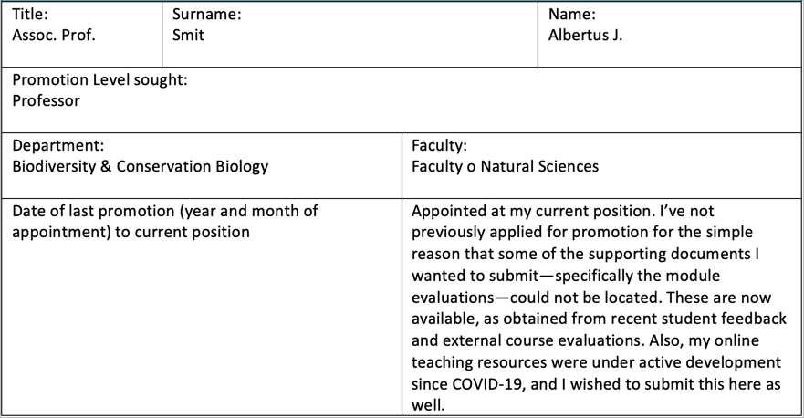
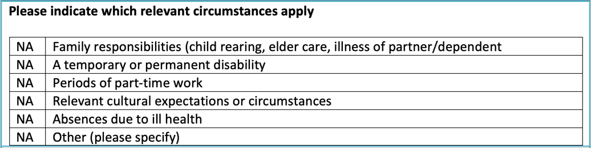
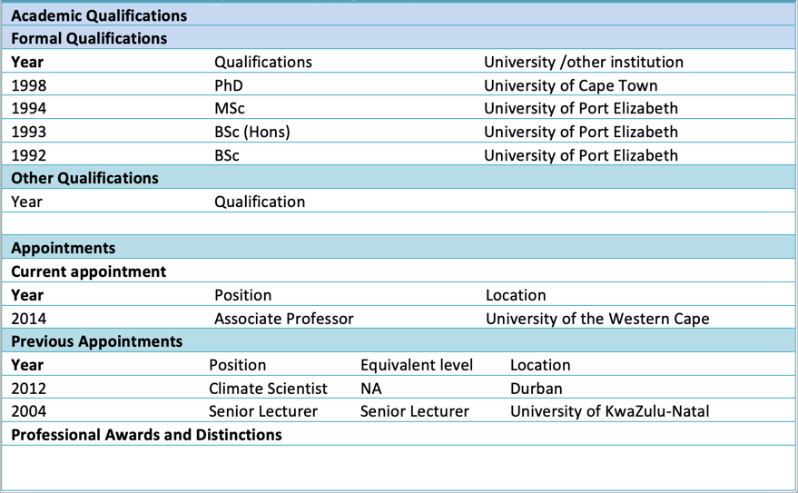
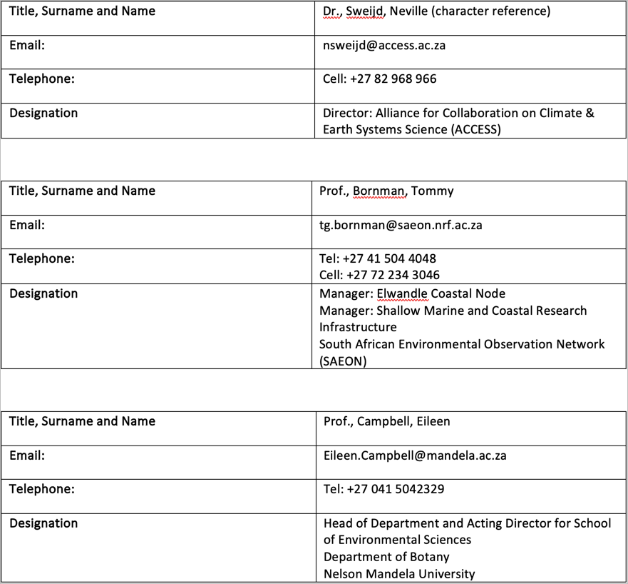

Ad Personam Promotion 2023
Annexure A: Case for Promotion
Part 1
Part 1.1. Candidate Details

Part 1.2. Relevant Personal Circumstances

Part 2. Qualifications and Appointments

The Case for Promotion document is also available in an HTML version.
Part 3: Career Summary Statement
I am an alumnus of UPE (now NMU) and UCT, and an academic with 25 years of national and international post-Ph.D. academic teaching and research experience. My academic journey uniquely transcends traditional disciplinary boundaries, distinguishing me from my peers.
As an ecophysiologist, I’ve developed a deep understanding of biogeochemical cycles related to nitrogen acquisition in algae, mastering a wide range of corresponding laboratory and analytical methods. When extended to field biology, this ecophysiological expertise broadens to explore the processes that govern the flow of minerals through ecosystems and define trophic relationships among species.
Assuming the role of a climate scientist, I’ve recognised the need to contextualise my understanding of ecosystem processes within the dynamic framework of physical coastal ocean processes. This context has made me proficient in crucial technological advancements, including hardware, software tools, and big data analysis. As a result, I’ve harnessed vast open datasets to produce research outputs of local and global relevance.
A deep understanding of experimental design principles enables me to efficiently design sampling campaigns that balance robust and representative data collection with financial and field resource constraints and human capital considerations. By fostering strategic partnerships between academia and external stakeholders, I ensure that my research maintains societal relevance and is effectively executed.
Some colleagues criticise my non-domain-specific research focus. However, I’d argue that my strength as an academic lies in my ability to deconstruct complex problems and address them using various tools across multiple academic disciplines. Comfortable with both field-based and computational approaches, I believe personal growth flourishes when the pursuit of new knowledge is a constant driving force. This pursuit of continuous learning requires exploration across diverse fields and the synthesis of interdisciplinary insights. In this context, being a generalist offers several advantages over specialising in a narrow research field. A generalist can approach complex problems with a broader perspective, leveraging insights from multiple disciplines to develop innovative solutions. This adaptability fosters a deeper understanding of interconnected systems, promotes collaborative research efforts, and ultimately leads to more impactful and holistic scientific contributions.
I excel in leading consortia of international collaborators, creating a synergistic environment conducive to groundbreaking research. This versatile skill set has been instrumental in attracting research grants from national and international funders, such as the NRF, Belmont Forum, SANOCEAN, and the European Union. Since 2014, I have secured ZAR 28.74 million in funding to support my research and students.
Broadly speaking, my research falls within the NRF Broad Category: Biological, Chemical, Earth Marine. It aligns with the National Strategies Grand Challenge – Global Change; Geographic Advantage – Marine and Antarctic Research & Biodiversity; Grand Challenge – Human and Social Dynamics; and Grand Challenge – Bio‐Economy. My research aligns with the UN SDGs 11 (‘Sustainable Cities and Communities’), 13 (‘Climate Action’), and 14 (‘Life Below Water’), touches on several aspects of South Africa’s National Strategies, and benefits from our unique Geographical Advantage.
My generalist approach influences my teaching, particularly at Levels 3 and Honours. I practice research-driven teaching, emphasizing transferable skills and promoting the philosophy of reproducible research.
Part 4.1. Learning and Teaching
During the COVID-19 pandemic, I adeptly adapted by incorporating innovative teaching methods, a practice I’ve upheld since 2022. I now offer my students a diverse range of learning options, including pre-recorded video lectures on iKamva, traditional PowerPoint-style presentations, comprehensive written materials, and face-to-face lectures. My undergraduate teaching strategy leverages video lectures for content delivery, while in-class sessions focus on facilitating discussions on intricate topics, further exploring related subjects, and problem-solving.
In an effort to create an engaging and immersive learning environment for BSc (Hons) students, I lead interactive workshops. Moreover, I developed The Tangled Bank1, a comprehensive website that functions as both an extended online textbook and a learning guide. This site is a testament to my multifaceted approach to teaching and learning, containing further details about my teaching methodology, as referenced in the syllabi of specific modules (see footnotes BDC3342, BCB744,3, and BCB7434). I take immense pride in my role as a lecturer, consistently striving to provide a learning experience that transcends the boundaries of the lecture hall.
4.1.1. Develop Level-3 module BDC334, and BSc (Hons) modules BCB744 and BCB743 for the BCB Department
Capitalising on an extensive history of curriculum development5, I have played a vital role in revitalising the core BSc (Hons) module, BCB744 Biostatistics, and in creating the innovative elective BSc (Hons) module, BCB743 Quantitative Ecology. My deep fascination with biological, ecological, and environmental data underpins these modules, fuelling my passion for data processing, analysis, interpretation, and the invaluable insights that emerge from such data-driven enquiries.
5 I was instrumental in developing South Africa’s first undergraduate Marine Biology curriculum at the University of KwaZulu-Natal in 2007 (with Profs. Perissinotto and Schoeman)
6 See a discussion about how I allow modern technologies to influence and shape my teaching
R, an open-source software ecosystem extensively adopted by ecologists, is the cornerstone of my core and elective BSc (Hons) modules. The increasing number of research papers and publications in biology and ecology utilising R and its packages attests to its importance. In academic settings such as UWC, Africa, and less developed countries, open-source software removes potential licensing obstacles presented by limited financial resources. This allows universal access to the software, enhancing scientific reporting, collaboration, and the principles of reproducible research, while fostering a culture of technological infusion6.
Another new module, BDC334 Global Biogeography & Macroecology, for which I share 50% of the credit for its development, is less data-intensive. This module lays the groundwork for engaging with species and environmental data matrices from which functional ecological processes can be extracted. Recent feedback from students who completed this module in 2022 indicated that exposure to more data-intensive coursework and an introduction to basic coding skills significantly alleviated the anxiety many students feel about coding (scripting). They further suggested that this exposure smoothed their transition into BCB744, the core module they undertake at the start of their BSc (Hons) degrees.
Collaborative learning is a cornerstone of my teaching approach7, the benefits of which I discuss in my online teaching materials. I use engaging teaching tools to instil interest in my subjects. For example, figures and maps8 serve as critical heuristic devices throughout the modules. The visually appealing and information-rich outcomes of their learning efforts provide an immediate measure of success. In this way, students develop programming skills by breaking down problems into computable parts, whilst also enhancing their visual literacy skills. This engaging and interactive approach is deeply integrated with an agile assessment policy that evaluates teaching and learning9 10. My modules demystify coding, making it more accessible and enjoyable for beginners.
7 Views on collaborative learning
8 Example exercises and bonus, designed to reward and incentivise continued learning towards advanced skills
10 Explanation of modes of assessment
12 The difference between science and data science
The skills learnt and the graduate attributes11 developed are designed to produce competencies outside the narrow confines of Biodiversity and Conservation Biology. Transferable core skills include compartmentalising complex problems and finding analytical solutions to problems in diverse fields such as finance, market research, and data science. Many students who graduate with a BSc (Hons) course from the BCB Department will, without requiring further training, have the same skills as someone who has completed a data science course.12 Many of our graduates will not pursue a research-focused career, yet they would like to continue benefiting from the skills gained at the BCB Department.
Structured outlines of the syllabus, timetables, course content, learning outcomes, required and recommended reading, assessment policies, advice for success (e.g. how to learn to understand13), model answers to old tests and exam questions (e.g. for BDC33414), and much else, are made available for all modules. During 2023 I will continue to build upon existing content and expand my approach to the other module I teach, BDC223 Plant Ecophysiology.
13 Thoughts about the learning process
14 Access to old test and exam questions
4.1.2. Develop the Tangled Bank website in support of undergraduate and BSc (Hons) modules
While I’m not particularly fond of PowerPoint slides, I recognise their utility in structuring lectures. My preference leans towards long-form, information-rich text for delivering in-depth content15. Ideally, I would base my teaching on textbooks, but these are not accessible to all our students. In our fast-paced world, information can quickly become outdated, posing a challenge to addressing students’ evolving learning and knowledge needs. The reality is that many students are averse to reading. To overcome this, I’ve developed and continue to enhance The Tangled Bank, a teaching-oriented website tailored to the needs of students enrolled in my Level-3 and BSc (Hons) modules. Leveraging the website format, I can ensure timely updates of knowledge and technologies in response to the swiftly changing scientific landscape and students’ learning requirements and feedback.
15 For an example of information rich text, see the example page
16 See the ‘vignettes’ menu at the top of The Tangled Bank.
17 For example, the FAQ page for BDC223
18 See feedback from colleagues about The Tangled Bank
The Tangled Bank serves as my main repository for lecture content and a continually expanding knowledge base for guiding research within my areas of focus. This website preserves invaluable behind-the-scenes insights16, contributes to the development of online textbooks, consolidates frequently asked questions about module content which ensures responsiveness to students17, and reinforces BCB Department modules by integrating relevant examples from my colleagues’ work18. The Tangled Bank aids peers in overcoming module-specific challenges, thereby enriching the learning experience.
Providing students access to long-form written teaching materials and instilling an expectation to engage with this content are pivotal in preparing students for their undergraduate and graduate degree programs. Long-form content facilitates a thorough exploration of ideas, offering context, nuances, and essential background information that enable students to understand complex concepts. By immersing themselves in comprehensive texts, students can cultivate a profound understanding of intricate topics, empowering them to think critically and analytically.
Contrary to summarised bullet points, which can oversimplify and condense information, possibly omitting crucial details, long-form materials motivate students to delve deep into a subject and contemplate various perspectives. This approach fosters intellectual curiosity and instills a genuine interest in the subject, promoting a culture of lifelong learning. Engaging with long-form content allows the motivated student to build a robust knowledge base rooted in self-driven learning, forming a firm foundation for their future academic and professional pursuits. As an educator, this is my aspiration.
Furthermore, interacting with long-form written materials enhances students’ reading comprehension skills. As they sift through dense texts, they learn to distinguish main ideas, supporting arguments, and potential counterarguments. This process refines their capacity to analyse and evaluate information—an essential skill in both academic and professional environments. Improving this skill is particularly crucial for the younger generation.
By supplying students with comprehensive content, I aim to foster a deeper appreciation for their chosen field, thus equipping them for success in their academic and professional journeys.
Lastly, The Tangled Bank strives to provide a detailed overview and breakdown of each module’s syllabus, including:
- an up-to-date timetable and links to each lecture’s material and assessments,
- information about the desired learning outcomes and graduate attributes,
- additional supporting information,
- prerequisites,
- the method of instruction,
- views on the benefits of colaborative learning,
- attendance policies,
- assessment policies, and
- support.
Please refer to BDC33419, BCB744,20, and BCB74321 for the above-mentioned information.
4.1.3. Feedback from external (peer) reviewers and students about above modules taught
The following feedback was received from Prof. Sophie von der Heyden for BCB74322 following her assessment of the module in her capacity of External Module Evaluator for the BCB BSc (Hons) Programme: “This is an excellent course; I really appreciate that everything is online and very easy to follow. The course is appropriate and challenging at the Honours level, but there also seems excellent support for the students. Really a standout module.” Further, she says, ”There was a wide range of marks, from 45 – 88%, with only one student […] failing this module. Given that students can really struggle with R, it was good to see how well the class did overall. I think part of this is the breakdown into the multiple assignments, which allows students to build on their knowledge as the tasks get more difficult, rather than being overwhelmed with one large assignment.”
22 Prof. Sophie von der Heyden’s feedback about BCB743 in 2022
23 Prof. Sophie von der Heyden’s feedback about BCB744 in 2022
About BCB744,23 she says, “As with BCB743, I was very impressed by this course, particularly how easy it is to navigate around the online component. I am sure that the students will be able to access all the necessary components fairly easily. The course is very much at the level of Honours and I hope that for the final projects the students utilize their learning from this course.”
However, Prof von der Heydon’s comment on the question about whether the marks were assigned appropriately, she said, “This is a little difficult to comment on as I could not see how the marks were awarded, but given the consistency of marks for each student, I think that the marks are all appropriate.”
Since the module content is continually being developed, expanded, and improved, I addressed Prof. von der Heydon’s concern about mark allocation by providing clear assessment policies for BCB74424, BCB74325, and BDC334.26 Further, the module content on The Tangled Bank has dramatically improved in all aspects since the modules were last evaluated at the end of 2022.
Feedback from students about the modules is also available.27 Six students from a class of 14 responded to the module evaluation forms in 2022. Feedback about students’ experience with the module was positive for most of the questions, but 50% of the respondents felt that better feedback could be given to individual tasks. A third of the sample also indicated they felt uncertain about the module’s expectations.
Eighteen students took BCB744 in 2022, and eight provided feedback on the module. As with BCB743, the feedback was similar. Four students felt they could benefit from more comprehensive feedback, and three respondents felt somewhat uncertain about my expectations of them (including the quality of their work). Additionally, two students felt I could better explain concepts and give them more time to understand them. Another negative comment given by two students was that they could be better empowered to explore a variety of sources better to complete assessment tasks.
The BDC334 class comprised 41 students in 2022, and only five students tried to provide feedback. One person felt a mismatch between the assessment and the module’s content. Five students thought feedback on individual assessments could be better. There was also one instance of dissatisfaction with the following: sufficient time for communication, my effort to understand their challenges, and uncertainty about expectations. Feedback on BDC223 in 2022 was poor, with only nine responses. Their satisfaction with the module was mixed and polarised into two distinct groups. About 50% of respondents provided much of the same feedback as I received for BCB744, BCB743, and BDC334, and these people felt that feedback on individual assignments could be better. The other half had more negative experiences and I received negative feedback for several other questions. My experience with this class in 2022 was anomalous, as it is singular as the worst class I have ever taught at University. Ever.
4.1.4. Tangled Bank vignettes and reproducible research
Interdisciplinary research brings together a variety of expertise, resulting in challenges related to teamwork, data sharing, and coding. The importance of transparency in research methodologies, like reproducible research,28 is ever increasing. Conforming to FAIR principles, international standards, and discipline-specific norms is indispensable. Even though software provides solutions, numerous researchers require assistance to stay abreast and capitalise on new expectations and possibilities.
28 See my essay on eResearch and reproducible research
PhD students typically devote 3-4 months to active thesis writing, which often serves as the only tangible evidence of degree completion. However, the vast majority of the learning and methodological skills developed over the remaining 33-44 months often become lost and unshared, leading to duplicated research efforts and restricted knowledge transfer. This failure to share behind-the-scenes solutions often results in non-reproducible research and collaboration difficulties, sometimes even contributing to public mistrust in science. Furthermore, better scalability is needed as datasets and complexities grow, and inefficiencies due to inadequate documentation of data selection, filtering, metadata tracking, and processing changes need addressing.
The Tangled Bank is designed to encourage knowledge retention and transfer, both of which are crucial for success in the information economy. To tackle these issues, my research students craft lab notebooks using tools like RStudio or Jupyter Lab/Notebooks and monitor version changes with git (e.g., GitHub). These notebooks combine code and text, automatically updating results as new data become available, thereby ensuring reproducibility in their work.29 30 31 I emphasise these same principles in both undergraduate and postgraduate courses I teach. The website also includes a series of vignettes32 that capture some of the analytical data workflows that often raise questions. These vignettes will continually be updated, and more examples documenting my own and my colleagues’ data and statistical analysis challenges will be preserved here for posterity.
29 Dr Robert Schlegel’s GitHub page
30 Ms Amieroh Abrahams’s GitHub page
31 Mr Ross Coppin’s GitHub page
32 Examples of vignettes may be accessed at The Tangled Bank under the ‘vignettes’ menu at the top.
33 The heatwaveR website—see the vignettes in the top menu.
Other vignettes are at the heatwaveR website.33
Part 4.2 Research
4.2.1. Successful and prolific funding attraction
My H-index on Google Scholar is currently 2934, which ranks as the second highest in the BCB Department. As of 29 June 2023, the site has recorded a total of 4,167 citations, 2112 of which were garnered since 2018. Since joining UWC in 2014, my annual publication average stands at approximately five; however, this rate has somewhat dropped in light of the COVID-19 pandemic. With the induction of a new cohort of students into my postgraduate research group, I anticipate a resurgence in the publication rate.
34 See my Google Scholar page
35 List of national and international research funding received
My leadership and management skills, cultivated over the past eight years, are demonstrated by my significant success in securing funding from national and international research programmes35. Moreover, I’ve successfully seen these programmes through to completion, aligning with well-defined goals and objectives. Since 2014, these research endeavours have cumulatively raised an estimated ZAR 28.74 million, bolstering the sustainability of research efforts for myself, my collaborators, and my students.
Historically, I have primarily relied on the NRF for funding. However, in recent years, I have been diversifying my collaborations internationally. This strategy is facilitated by accessing global funding streams, such as those provided by the European Union, the Belmont Forum, and the SANOCEAN programme. These sources not only leverage funding from partnering countries, but they also foster a degree of collaboration that exceeds what is typically feasible with South Africa-centric funding.
Previously, I held a C2 rating, but chose to let it lapse after thoughtful consideration. I’ve expanded on my views regarding the rating system elsewhere36. Thus far, I’ve found that having an NRF rating does not necessarily enhance the likelihood of obtaining research funding.
36 My thoughts about the NRF rating system and maintaining my own rating
4.2.2. Development of R packages in marine heatwave analysis
One of my most distinctive and significant research contributions is the creation of two R packages: RmarineHeatWaves37 and heatwaveR38. These tools emerged as a response to the formal definition of marine heatwaves proposed by Alistair Hobday and his team in 2016. The algorithm to detect marine heatwaves based on standardised metrics was first published as an R package under the name RmarineHeatWaves, and later updated to heatwaveR in 2017. This software has since been downloaded more than 32k times39 by the international scientific community and has been cited in over 150 peer-reviewed papers since 201840. I, alongside Dr. Robert Schlegel, my former UWC PhD student, continue to maintain and enhance this package, introducing new functionalities in response to the needs of our user community.
37 The RmarineHeatWaves documentation.
39 The RmarineHeatWaves documentation.
40 This number is hard to track, but a search in Google Scholar for the term “heatwaveR” (inverted commas included) yields at least 150 citations. A shorter list of the citations is provided on the heatwaveR website. Notable examples of high-impact publications are provided here
41 Examples of cross-discipline research in marine heatwaves promoted by the heatwaveR package are provided here
42 Evidence of the application of the heatwaveR package outside of the initially intended field of application, marine science, here.
The influence of this R package on the global marine heatwave research community cannot be overstated. The standardisation of metrics it offers facilitates a more consistent global study of these events. Prior to its release, these tools were largely available only to physical oceanographers who primarily use Python; publishing it in R extended its reach to biologists and ecologists. This has sparked interdisciplinary collaboration across fields like oceanography, climatology, and ecology41. Interestingly, it is now being applied in areas beyond its initial intended marine scope, such as public health42, demonstrating its broad and unexpected utility.
Given the consistency in reporting Marine Heat Wave (MHW) metrics, the quality of decision-making by policy-makers and resource managers has been significantly enhanced. For instance, gaining a more refined understanding of MHWs aids in devising strategies to mitigate the environmental repercussions of extreme thermal events, as well as adapting to their influences on fisheries and other marine resources43.
43 For studies that have used metrics calculated by heatwaveR in support of policy development around the management of marine living resources, see this list
44 Evidence of examples where such novel research questions and hypotheses have been addressed
Further, heatwaveR also led to the development of novel research questions and hypotheses that better analyse and compare MHWs across different periods and regions and employ the metrics to design creative experiments that better link ecological impacts to precisely quantifiable properties of the temperature record.44
Finally, the heatwaveR package raises public awareness about MHWs and their impacts on marine ecosystems by making it easier for researchers to communicate their findings to a broader audience. For example, the marine heatwave tracker built by Dr Schlegel uses the heatwaveR package in the background.45
45 Various online trackers of marine heatwaves use heatwaveR as the underlying processing engine
4.2.3. Student supervision
My UWC student supervision record is provided in my e-Portfolio.46 The record indicates 16 BSc (Hons) graduates, 11 MSc/MPhil graduates, and 7 PhD graduates. Appearing on the online NRF online system as active and continuing is Mr Phumlile Cotiyane, a PhD candidate registered with SAEON’s Elwandle Node whom I am co-supervising. Including postgraduate supervision prior to my tenure at the UWC in 2014 brings my career total to 57 graduates, across all levels.
46 Extract from the NRFOnline system listing most of my post-graduate students
I have five active MSc students (Ms Cayley Cammel, Mr McQuwaen Moonoosamy, Mr Jesse Philips, Mr Tom Spencer-Hicken, and Ms Carlin Landsberg) and four active BSc (Hons) candidates, Ms Aailyah Samsodien, Ms Zoë-Angelique Petersen, Mr Taine Trimmel, and Mr Isma-eel Jattiem. Since these students receive free-standing bursaries from the NRF, their names do not yet appear in my NRF database under the list of students associated with my research profile. This also applies to Ms Zara Prew, an active PhD student in my research group.
Roughly 49% of all the individuals, above, are of previously disadvantaged backgrounds, and 12% were with my role as co-supervisor.
I have had three post-docs in my lab: Dr Rob Williamson, Dr Christo Rautenbach, and Dr David Dyer, and the latter will be with me until December 2023.
4.2.4. The South African Coastal Seawater Temperature Network (SACTN)
Related to my interest in marine heatwaves, I have also been instrumental in developing the South African Coastal Seawater Temperature Network (SACTN).47 This work brings together, for the first time, the disparate seawater temperature records measured over up to 4 decades by the KwaZulu-Natal Sharks Board (KZNSB), Ezemvelo KZN Wildlife (EKZNW), the South African Weather Service (SAWS), the Department of Forestry, Fisheries and Environment (DFFE), the South African Environmental Observation Network (SAEON), and the UWC. 48 This paper has been cited 166 times and instrumental in several other of my own frequently cited publications49 and stimulated further avenues of research regarding the variability of ocean temperature, including the research on marine heatwaves.
47 The The South African Coastal Seawater Temperature Network (SACTN) GitHub page from where data can be downloaded
4.2.5. Editorial contributions
2018–present Associate Editor, Aquatic Botany.50
50 Associate Editor for Aquatic Botany
51 My Reviewer’s profile on Loop for editorial contributions to Frontiers in Ecology & Evolution
2020–present Associate Editor Frontiers in Ecology & Evolution and Frontiers Topic Editor,51 Managing Deep-sea and Open Ocean Ecosystems at Ocean Basin Scale - Volume 2
2023–present Guest Editor, Special Issue, Botanica Marina
In addition, reviewing done for Frontiers in Marine Science; Plos ONE; Proceedings of the National Academy of Sciences; Journal of Phycology; Estuarine Coastal & Shelf Science; African Journal of Marine Science; Hydrobiologia; Journal of Applied Phycology; Journal of Marine Systems; Marine Biology; Marine Ecology; Diversity & Distributions; Ecology & Evolution; Atmosfera; Big Earth Data; Botanica Marina; Environmental Pollution; Science of the Total Environment; Frontiers Ecology And Evolution; Meteorology and Atmospheric Physics; One Health; International Journal of Environmental Research and Public Health, Marine Pollution Bulletin.
4.2.6. Future research
My future research endeavours will focus on investigating the interplay between coastal marine extreme events and the shifting climate. The objective is to ensure that this research is both relevant and beneficial to a broad spectrum of actors who gain from nature’s contributions. Building upon the foundation of my BlueConnect and EXEBUS programmes, the scope of my work will increasingly embody a transdisciplinary approach. This will be achieved through collaborations with experts in economics, sociology, and maritime law, rendering the research relevant to both society and industry. Within this field, my specific interests—the biogeochemical function of kelp and the detection and statistical analysis of extreme events in environmental time series—will be deployed to establish links between environmental drivers and their impacts on ecosystems and society.
Part 4.3 Community Engagement
4.3.1. Academic Lead, Kelp Scientific Collaboration PPP
I have been the academic lead of the Kelp Scientific Collaboration52 consortium since September 2021 (ongoing). The consortium is a Public-Private-Partnership whose intention is to foster collaboration around kelp ecosystems for the betterment of sustainable practices that concern the industry and for scientific advancement on kelp ecological functioning.
4.3.2. A research project, funded by SANOCEAN BlueConnect, about the perceived value of South African kelp
This project on the perceived value of kelp53 was heavily concerned with people’s relationship with kelp and produced several outputs:
January 2022 Premier of Akshata Mehta’s movie, Kelp, South Africa’s Golden Forests (funded by myself through BlueConnect, and provided concept and oversight).54 The short film was first shown at the annual PSSA meeting in Arniston and subsequently entered into various nature documentary festivals. It is also on YouTube, where it has received 5.3k views.
September 2021 Supervise Akshata Mehta’s MPhil Thesis, “Golden Forests” of the Sea: Assessing Values and Perceptions of Kelp in the Western Cape Region of South Africa. This work continues to yield stakeholder engagements with community members and the seaweed industry of Southern Africa.55
4.3.3. BlueConnect engagements
Contributing author to Chapter 3, UNEP report on global kelp forests.56
Global Ecological Assessment of Kelp, June 15-17, 2022, in Arendal, Norway.57 This work stems directly from the SANOCEAN BlueConnect Programme, of which I am the South African PI. The work intended to bring together global kelp experts to evaluate kelp forests.
BlueConnect Kelp Ecosystem 10-day Field Course, 16 – 26 March 2020, Cape Town and De Hoop Nature Reserve – this workshop was affected by COVID-19 and all field work was cancelled; it proceeded as an online course. Ten students from South Africa and Norway participated.58
November 2019: Lead workshop with the kelp industry to gain perspectives about challenges they face about environmental and governance concerns they experience.
4.3.4. EXEBUS engagements
EXEBUS59 60 undertakes an Integrated Ecosystem Assessment (IEA) to establish the roles, trends, and range of variability and the extremities of natural and anthropogenic geophysical, biological, governance, socio-economic features and phenomena, and assess their impact on ecological, sociological, governance, and macroeconomic systems and processes in the Benguela Current Large Marine Ecosystem (BCLME) of South Africa (SA), Namibia, and Angola. The goal is to strengthen the rational basis for management on relevant spatial and temporal scales (up to 2070).
59 Video on YouTube about EXEBUS
To further these interests, my Team and I have had stakeholder engagements with (ongoing):
- 2022 The Benguela Current Convention
- 2022 The kelp industry in South Africa
- 2022 An assortment of stakeholders (academia, the Ministry of Fisheries, University of Namibia academics)
- 2023 Users and port operators of the Port of Cape Town
4.3.5. Other community engagements and capacity-building contributions
I am currently involved with Cape Nature in initiatives aimed at building capacities among fishermen in the Helderberg region61. I am also an active participant in the Kogelberg Marine Working Group, which is dedicated to discussing and implementing conservation management initiatives in the Kogelberg region62.
61 See most recent invitation to participate in a capacity building initiative
62 Invitation quarterly Kogelberg Marine Working Group meeting
Since 2017, I have been training students and budding scientists from previously disadvantaged Higher Education Institutions (HEIs) and NRF National Facilities. This includes teaching R courses at the University of Zululand, Walter Sisulu University, SAIAB, and SAEON. In the process of these collaborations, I regularly engage with young academics freshly appointed to their positions at these universities. The objective is to foster research proficiency and academic confidence, thereby amplifying their potential to positively influence subsequent generations of graduates.
I have recently received and accepted an invitation from OceanHub Africa to spearhead a project at the Ocean Hackathon as a Challenge Owner. This platform allows me to interact with professional coders and jointly work towards data-driven solutions to address certain marine conservation and management challenges in the region63.
63 See invitation letter
4.3.6. CoVID-19 Environmental Research Group
During the first year of CoVID-19 I was part of the CoVID-19 Environmental reference Group (CERG) which aimed to establish the link between seasonality and the prevalence and spread of CoVID-19 in developing countries. An output of the work is the paper Smit et al. (2020).64
64 Smit et al (2020) about CoVID-19
Part 4.4 Professional Roles
- 2020–present SA National Committee for SCOR
- 2018 Invitation, Lead author on IPCC SROCC Report
- 2018–present South African Network for Coastal and Oceanic Research steering committee
- 2016–2019 President, Phycological Society of Southern Africa (PSSA)
- 2022 Eastern Boundary Upwelling System (2022) conference special session host
- 2022–present Academic Lead in the Kelp Scientific Collaboration
- 2023 Group member of IUCN SSC Seaweed Group65
65 Invitationn letter to IUCN SSC Seaweed Group
Part 4.5 Institutional Leadership
- 2016–ongoing Level-2 coordinator
- 2016–2019 Department Library representative
- 2017–2022 Faculty Postgraduate Committee
- 2015–2017 Faculty Student Affairs Committee
As a Departmental Postgraduate committee representative, I have several times been part of an initiative to develop an online or automated approach to handling the cumbersome and archaic current approach to dealing with the PG administration process. Various initial attempts have failed due to systemic issues in the UWC system that integrates the various roles that must be part of such a process. Most recently, I have discussed with Prof. Fielding the urgency to revive the process, and we have subsequently held a meeting to initiate a new Faculty process to take forward.66
66 Various contributions to initiatives that attempted to solve the PG administration process. See specifically my latest plead to reinstate the planning and development process
Part 5. Academic goals for the next three years
UWC finds itself nestled in a region where two distinct oceanic currents intersect between Cape Agulhas and Cape Point. The Agulhas Current, a western boundary system, carries heat from tropical regions to colder latitudes. In contrast, the Benguela Current, an eastern boundary system, fuels the productivity of one of the globe’s most substantial upwelling regions. The confluence of these oceanic environments, paired with South Africa’s unique socio-economic dynamics, holds the potential to profoundly influence local livelihoods.
We live in a time of considerable transformation. The Agulhas Current is broadening, ferrying increasing amounts of heat and consequently impacting the frequency of marine heatwaves along our coast. Conversely, the southern part of the Benguela Large Marine Ecosystem witnesses localised cooling in certain areas, propelling the growth of kelp forests.
My research and teaching interest gravitates towards these coastal and oceanic regions. This setting offers a rich canvas for both educational and research opportunities. The tight weave between my teaching and research work is particularly thrilling for me. With the advent of enhanced computational power, sophisticated algorithms, and AI, complemented by an abundance of larger datasets, the scope for groundbreaking research is immense. These advancements equip students with skills essential for the contemporary workplace. I find this vibrant intellectual environment stimulating and continually strive to refine my online teaching resources.
I am driven to broaden my research on extreme marine environmental phenomena, such as temperature variations, wind patterns, wave dynamics, and swells. I am on the verge of releasing v.1.0.0 of heatwaveR, a software update that will facilitate and expedite global research. These tools will assist me in honing in on the ecological, societal, and industrial importance of kelp forests.
Referees
Contact Details of at least three (3) referees, two of which must be external to UWC (one must be a character reference)

Reuse
Citation
@online{j._smit2023,
author = {J. Smit, Albertus and Professor A.J. Smit, Associate},
title = {Ad {Personam} {Promotion} 2023},
date = {2023-06-29},
url = {http://tangledbank.netlify.app/pages/case_for_promotion.html},
langid = {en}
}